FlySky i6X: every setting at a glance
All transmitter settings for the VTOL Y3 on one page: what was changed, what was checked, and the final channel map.
Keys
| Action | Key |
|---|---|
| Open the menu | hold OK (2 s) |
| Move / change a value | UP / DOWN |
| Open an item · next field or channel | short OK |
| Back without saving | CANCEL |
| Save and back | hold CANCEL (2 s) |
Changed 2
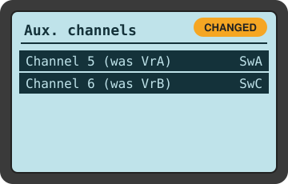
Functions setup → Aux. channels
Before: Channel 5 = VrA · Channel 6 = VrB · Channel 7 = none
After: Channel 5 = SwA · Channel 6 = SwC · Channel 7 = SwB
SWA now arms/disarms (Pixhawk RC5_OPTION=153). SWC now picks the flight mode (Pixhawk FLTMODE_CH=6). SWB (Channel 7, added 2026-10-18, Guide 06) = return home (Pixhawk RC7_OPTION=4). The knobs VrA/VrB are no longer used.
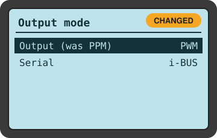
System setup → RX setup → Output mode
Before: PPM
After: PWM (Serial: i-BUS)
A PPM encoder board sits between the receiver and the Pixhawk RC IN. It needs one PWM signal per channel and builds the PPM itself. With PPM the Pixhawk saw frozen values; with PWM everything works.
Checked, left as they were
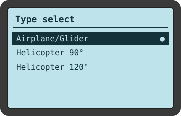
Airplane: Plain channels, no helicopter mixing
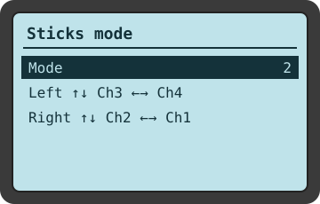
2: Left: throttle ↑↓, yaw ←→ · Right: pitch ↑↓, roll ←→
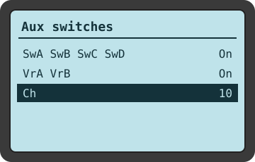
All on · Ch 10: Switches usable, enough channels sent
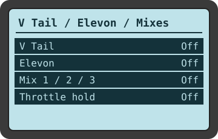
All Off: The Pixhawk does all mixing; double mixing would break pitch/yaw
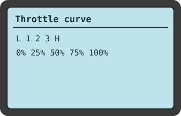
0 / 25 / 50 / 75 / 100 %: Straight line: the Pixhawk sees the real stick
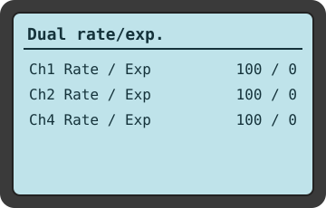
Ch1, Ch2, Ch4: 100 / 0: Full range, no softening (needed for calibration)
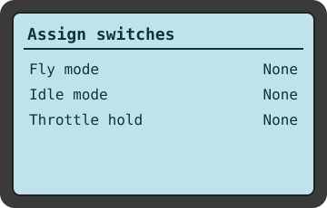
All None: SWA/SWC trigger no transmitter feature
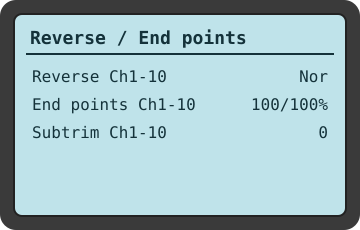
Nor · 100/100 % · 0: No flipped channels, full travel, true centre
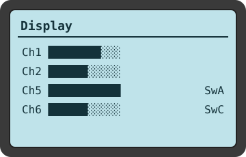
Each control moves only its bar: Proves the transmitter side is correct
Result: channel map
| Channel | Control | Pixhawk uses it for |
|---|---|---|
| Ch1 | Right stick ←→ | Roll |
| Ch2 | Right stick ↑↓ | Pitch |
| Ch3 | Left stick ↑↓ | Throttle |
| Ch4 | Left stick ←→ | Yaw |
| Ch5 | SWA | Arm (down) / disarm (up) |
| Ch6 | SWC | QSTABILIZE (up) · QHOVER (middle) · FBWA (down) |
| Ch7 | SWB | Return home, QRTL (down) / back to the SWC mode (up) |